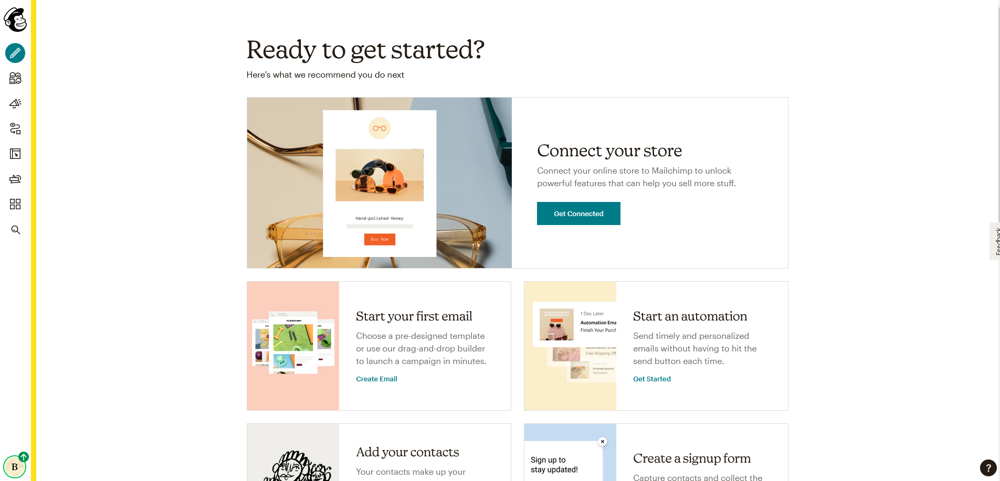
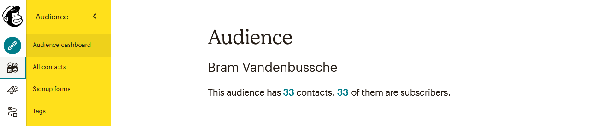
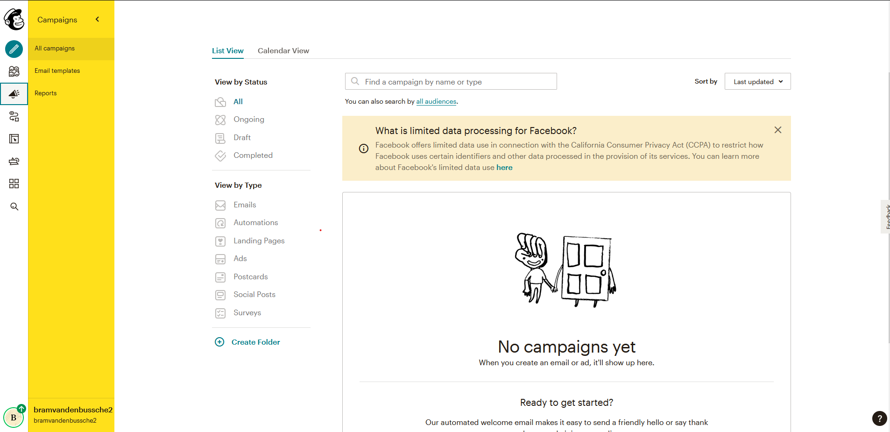
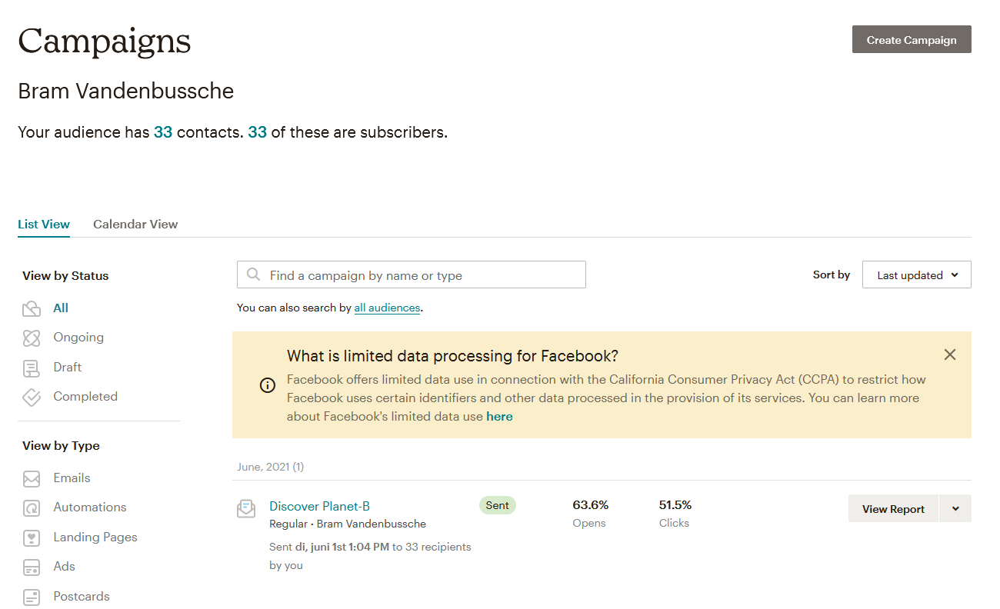
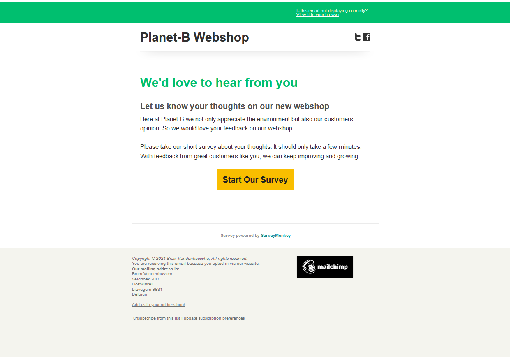
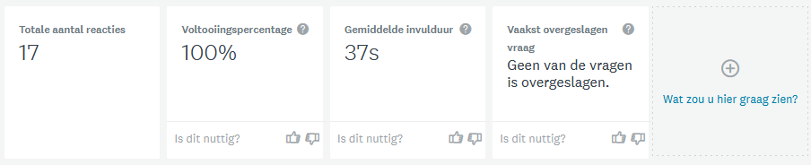
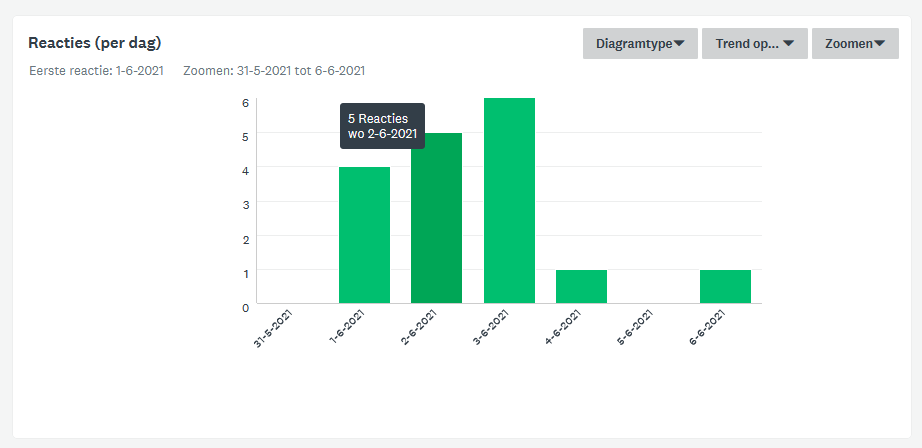
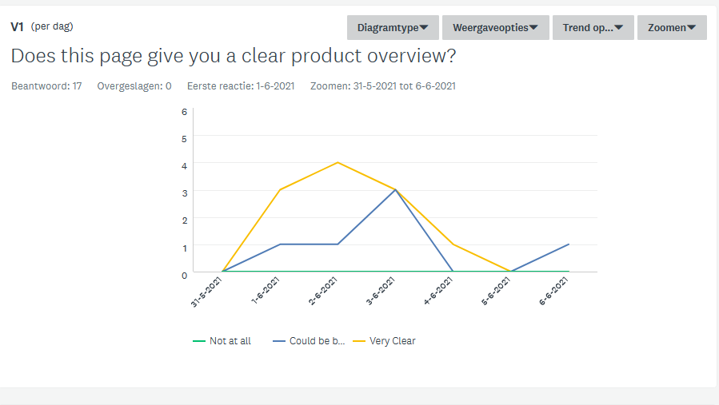
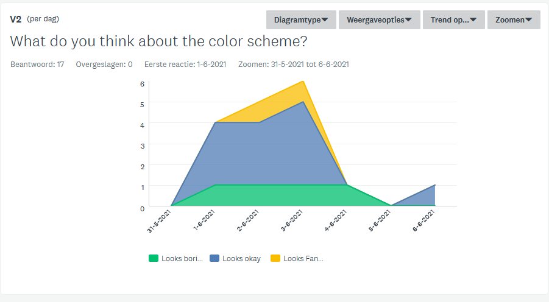
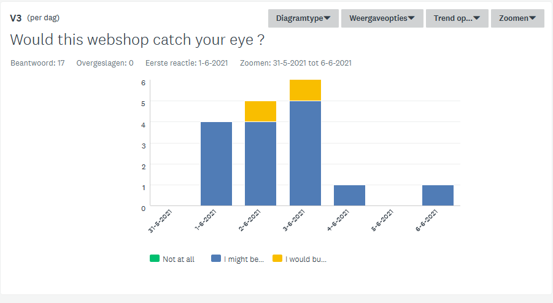

Mailchimp verslag Bram Vandenbussche
Voor het onderdeel digitale marketing willen de docenten van IT Business ons kennis laten maken met een all-in-one integrated marketing platform for small businesses.
Veel bedrijven werken harder dan ooit om in contact te blijven met hun klanten. Vroeger ging dit via drukwerk of reclame maar de dag van vandaag verloopt alles digitaal en gepersonaliseerd. Om hierop in te zetten laten de docenten ons kennis maken met het platform "Mailchimp". Via dit platform kan je nagaan wat jouw publiek wil en zo gepersonaliseerde marketing bieden. Hoe meer je weet over jouw publiek hoe slimmer je kan zijn met jouw marketing.
Aanmaken van mailchimp
We beginnen bij het begin, het aanmaken van een account.
Daarna komen we terecht op de landing page van Mailchimp.

Hierna maken we een "audience" aan. Een audience is de lijst van mensen waar je je gepersonaliseerde mails naar wil versturen. Deze kunnen opgehaald worden uit een lijst of handmatig ingevoerd worden.
Bij het aanmaken van een audience kan je verschillende statussen geven aan je contacten waaronder subscriber. Dit is later belangrijk want je kan je mails enkel versturen naar subscribers.

Aanmaken van een campaign
Om gepersonaliseerde mails te verzenden moet jeen campagne starten. Dit doe je op de campaign page.

Na het aanmaken van je campaign ziet je campaign page er zo uit.

De mail zelf
Ik heb mijn mail zo simpel mogelijk gehouden waardoor de ontvanger heel gemakkelijk de knop naar de survey vind.

Survey data
Inzichten

Uit de inzichten data haal ik dat mijn survey 17 reacties op de 33 mails gekregen heeft wat ongeveer 50% (niet slecht denk ik dan) en dat er geen enkele vraag overgeslaan werd. De survey was ook kort genoeg om de aandacht niet te verliezen.
Trends

Uit de trends data haal ik de eerste 3 dagen de meeste reacties ontvangen zijn waarvan dag 3 de grootste piek heeft. In het weekend is er niet veel meer gereageerd.
Vraag 1

Uit de data van vraag 1 haal ik dat onze product overview overzichtelijk is aangezien het merendeel van de personen de optie 'Very Clear'(64.71%) kozen.
Vraag 2

Uit de data van vraag 2 haal ik dat er ruimte voor verbetering is in verband met het kleurenschema van onze webshop aangezien het grootste deel van de personen voor de opties 'Looks boring'(22.53%) en 'Looks okay'(64.71%) gegaan zijn.
Vraag 3

Bij de data van vraag 3 ben ik aangenaam verrast want daar kiest het over grote deel voor optie 'I might be interested' (88.24%) en 'I would buy something' (11.76%)
Conclussie
Ik vind Mailchimp een heel interessant gegeven en zou er mij zeker willen in verdiepen als ik tijd heb. Het lijkt mij wel iets dat gemakkelijk is aan de oppervlakte maar waar je zo diep mee kan gaan waardoor het complex word.
De data vergaring is ook zeer tof omdat je heel kort op de bal feedback krijgt en je daar ook snel mee aan de bak kan en je product aanpassen. De anonimiteit van de mails zorgt er ook voor dat mensen zicht niet inhouden met hun kritiek, wat zeker niet slecht is.
In het kort samengevat. Something to monkey around with...